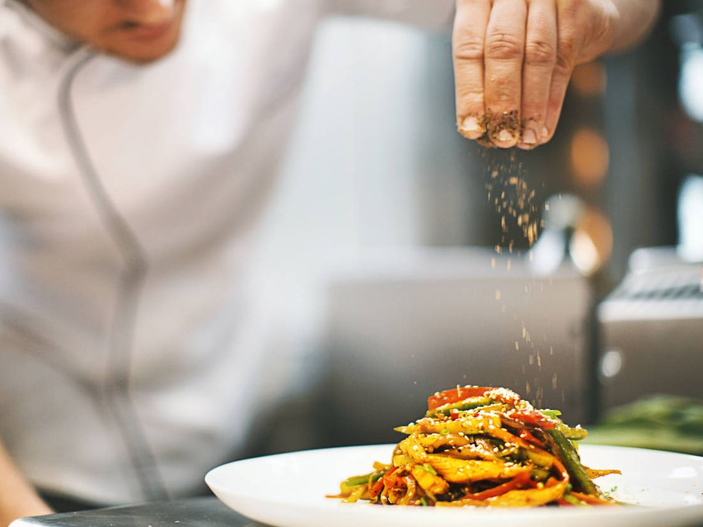
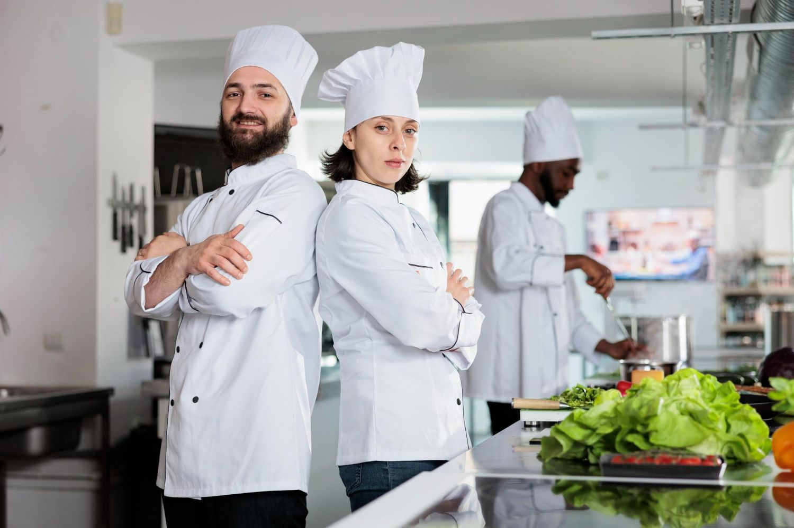
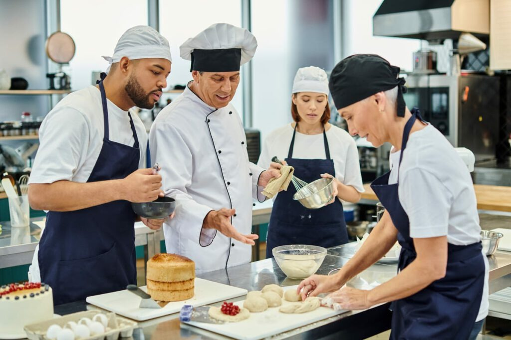
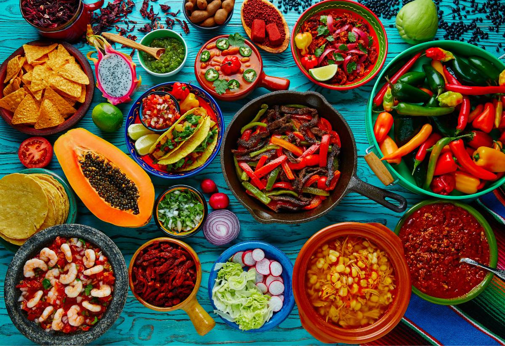

La especialidad de Gerencia y Producción en Cocina se centra en la formación de profesionales capacitados para gestionar y operar en el ámbito gastronómico, combinando habilidades culinarias con conocimientos de administración y gestión de negocios.
Se enfoca en la creación de experiencias culinarias de alta calidad, la gestión eficiente de recursos y la innovación en la cocina.

Áreas de Estudio
Dirección Administrativa en Establecimientos Gastronómicos:
Aprendizaje sobre la gestión y administración de restaurantes y otros servicios de alimentación.
Incluye la planificación, organización y control de operaciones, así como la atención al cliente y la gestión de personal.
Operaciones de Cocina Primaria:
Desarrollo de habilidades en la preparación de alimentos, técnicas de cocción y presentación de platos.
Enfoque en la cocina costarricense e internacional, así como en la creación de menús.
Tecnologías de Información Aplicadas a la Gerencia:
Uso de herramientas digitales para la gestión de operaciones, control de inventarios y promoción de servicios.
Capacitación en software de gestión y análisis de datos.
Emprendimiento e Innovación:
Formación en la creación y gestión de negocios gastronómicos, incluyendo el desarrollo de planes de negocio y estrategias de marketing.
Inglés Orientado a las Artes Culinarias:
Desarrollo de competencias lingüísticas en inglés aplicadas al ámbito gastronómico, facilitando la comunicación con clientes y proveedores internacionales.
Competencias Desarrolladas
Técnicas: Habilidades en la preparación y presentación de alimentos, gestión de cocina y control de calidad.
Genéricas: Trabajo en equipo, liderazgo, comunicación efectiva y resolución de problemas.
Humanas: Ética profesional, responsabilidad social y compromiso con la sostenibilidad.

Oportunidades Laborales
Chef Ejecutivo: Liderando la cocina de restaurantes, hoteles y otros establecimientos de alimentación.
Gerente de Restaurante: Supervisando las operaciones diarias y gestionando el personal y los recursos.
Consultor Gastronómico: Asesorando a empresas sobre prácticas culinarias y de gestión.
Emprendedor: Creando y gestionando su propio negocio en el sector gastronómico.
Educador Culinario: Enseñando técnicas de cocina y gestión en instituciones educativas.

Importancia de la Especialidad
Creciente Demanda: La industria gastronómica está en constante crecimiento, lo que genera una alta demanda de profesionales capacitados en gestión y producción.
Impacto Positivo: Los egresados contribuyen a la creación de experiencias culinarias de calidad y al desarrollo de la cultura gastronómica local.
Formación Integral: La especialidad no solo enseña habilidades culinarias, sino que también desarrolla competencias en administración y gestión.

📚 Maya Curricular
🎓 Décimo Año
Dirección administrativa en establecimientos gastronómicos
Procesos de mantenimiento, limpieza y desinfección – 80 horas
Administración de establecimientos gastronómicos
Gestión de operaciones de cocina primaria
Procedimientos básicos de cocina – 360 horas
Cocina costarricense con identidad local – 120 horas
Tecnología de información aplicadas a la gerencia y producción en cocina
Herramientas para la producción de documentos – 68 horas
Herramientas para la gestión y análisis de la información – 40 horas
Internet de todo y seguridad de los datos – 52 horas
🎓 Undécimo Año
Técnicas de cocina internacional
Cocina internacional clásica – 120 horas
Cocina de América del Norte y del Sur – 120 horas
Cocina Centroeuropea - Mediterránea – 120 horas
Cocina Asiática – 120 horas
Coordinación y gestión de operaciones de pastelería nacional e internacional
Procesos de panificación en productos primarios y hoteleros – 80 horas
Técnicas de repostería en productos primarios y hoteleros – 80 horas
Emprendimiento e innovación aplicada
Oportunidades de negocios – 40 horas
Modelo de negocios – 32 horas
Creación de la empresa – 68 horas
Plan de vida – 12 horas
🎓 Duodécimo Año
Coordinación y gestión de operaciones de pastelería nacional e internacional
Técnicas de elaboración de postres – 104 horas
Confitería y chocolatería de fantasía – 96 horas
Dirección de procesos de alta cocina
Tendencias de alta cocina – 204 horas
Dirección de cocina para eventos especiales – 96 horas